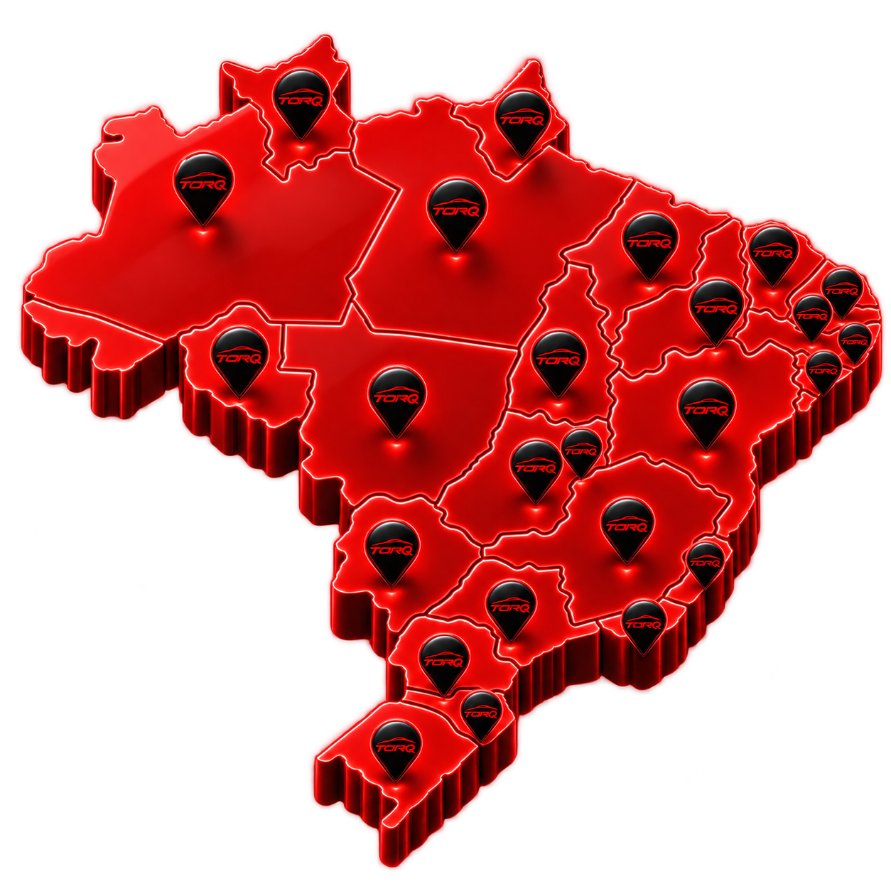

01 / AQUISIÇÃO
Tráfego pago
Campanhas que encontram quem está pronto para comprar, com estratégia, criativos e otimização focados em oportunidades reais.
Estratégia, mídia e inteligência comercial trabalhando juntas para transformar atenção em oportunidades — e oportunidades em vendas.
Não somos apenas mais uma agência. Somos um time conectado à sua operação, combinando marketing, tecnologia e processo comercial para gerar crescimento com direção.
Campanhas que encontram quem está pronto para comprar, com estratégia, criativos e otimização focados em oportunidades reais.
Processos e abordagens para fazer o lead avançar com agilidade, consistência e mais conversão.
Visibilidade de ponta a ponta para acompanhar o funil, priorizar oportunidades e decidir com clareza.
Diagnóstico, metas e plano de ação para transformar gargalos em uma operação mais eficiente e previsível.
Uma presença digital que traduz a força da sua marca, aproxima o público e dá mais potência para cada campanha.
Conhecemos a dinâmica, a pressão por giro e a velocidade do mercado automotivo. Por isso, nossas estratégias nascem da realidade de cada operação.
Não entregamos tarefas soltas. Construímos um sistema conectado, acompanhado por um time que entende o negócio e age rápido.
Falar com um especialistaMapeamos a operação, o público, a oferta e os gargalos para encontrar as alavancas com maior potencial de resultado.
Marketing, mídia, conteúdo e vendas seguem a mesma direção, com metas e responsabilidades bem definidas.
Colocamos as ações em movimento com agilidade, consistência e proximidade com o seu time.
Dados viram decisões. Acompanhamos indicadores, testamos caminhos e aceleramos o que realmente funciona.
Uma operação preparada para atender negócios automotivos de diferentes portes, cenários e regiões — sem perder a proximidade.

Algumas respostas rápidas para você entender como a Torq pode entrar na sua operação.
Atendemos empresas do ecossistema automotivo: concessionárias, lojas de seminovos, grupos automotivos e operações de serviços e pós-venda.
Não. Integramos mídia, conteúdo, inteligência de dados e processo comercial para que a geração de demanda resulte em mais oportunidades e vendas.
Começamos com uma conversa de diagnóstico. Entendemos cenário, metas e principais gargalos antes de recomendar o plano mais adequado.
Sim. Nossa operação é preparada para acompanhar clientes em todo o país, com rotina próxima e processos digitais de gestão.
O prazo varia conforme o ponto de partida, investimento e ciclo comercial. Desde o início, definimos indicadores para acompanhar evolução com transparência.